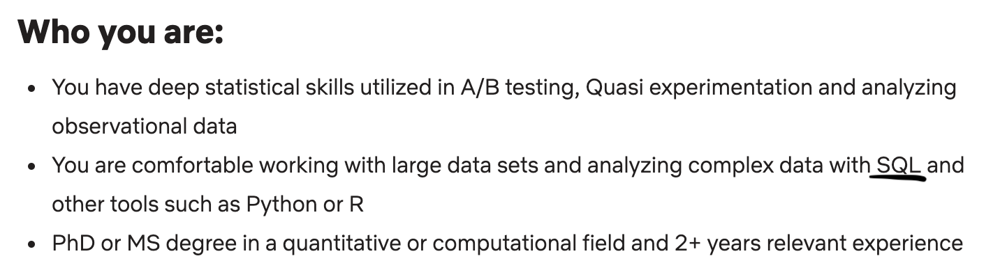
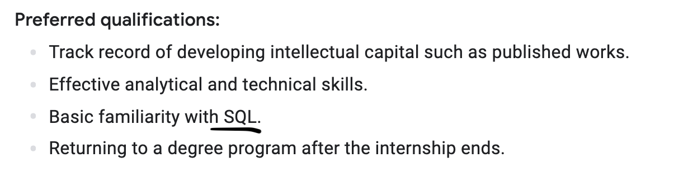
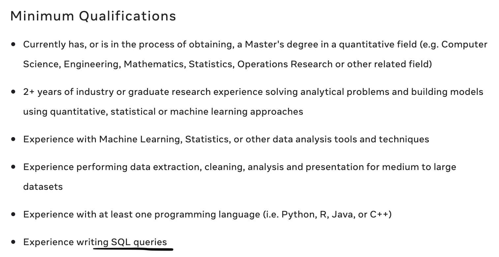
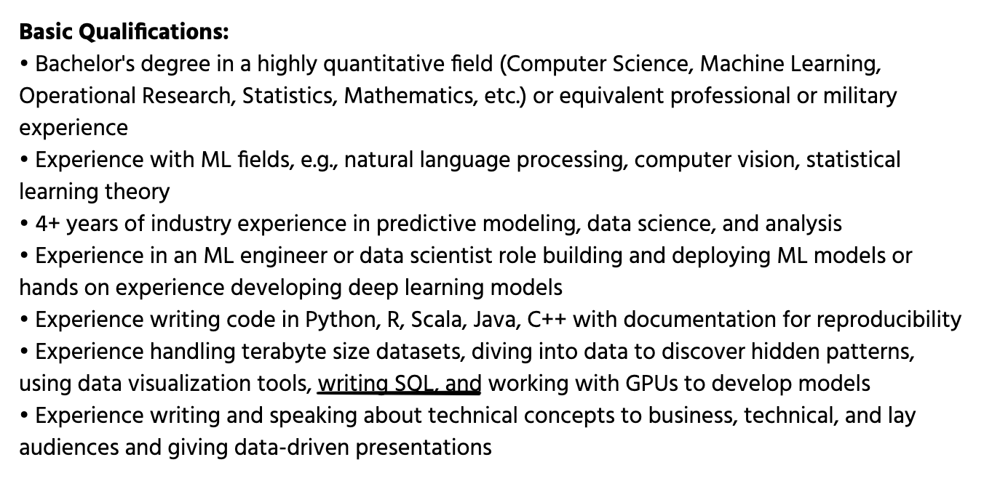
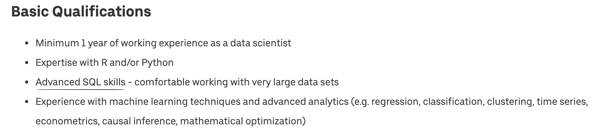

Discussion 5
SQL Tutorial
SQL, Structured Query Language, is a programming language designed to manage data stored in relational databases. SQL operates through simple, declarative statements. This keeps data accurate and secure, and helps maintain the integrity of databases, regardless of size.
Why SQL?
Let’s first look at some sample qualifications for the position of Data Scientist at Tech companies:
- 1.

- 2.

- 3.

- 4.

- 5.

They all require you to know how to write SQL queries. However, most of them only require a basic understanding of SQL. That’s what we are going to do today :)
Data types in SQL:
Some of the most common data types are:
INTEGER: a positive or negative whole numberTEXT: a text stringDATE: the date formatted as YYYY-MM-DDREAL: a decimal value

Relational Database (DBMS):
A DBMS is a software that interacts with a database. It can perform the following operations:
- Managing the access of a database
- Running SQL queries
- Writing data into the database
- Updating database
- Deleting data from the database
SQLite and MySQL, are the two most popular open source DBMS. We are going to use SQLite.
SQLite3 in Python
Start connect to sqlite3 server
To run our sqlite3, you need to first connect to a local/remote database via .connect(NAME)
Once you have a Connection, you can create a Cursor object and call its execute() method to perform SQL commands. Also, you can use fetchall() command to get the results. Otherwise, you are merely displaying the representation of the method.
import sqlite3
conn = sqlite3.connect(NAME)
cursor_obj = conn.cursor()
cursor_obj.execute(SQL_COMMAND)
cursor_obj.fetchall()
Firstly, let’s try on this database I created: people.db. It contains the name, age, ID, and occupation of some students, as well as their relationships. Here are the tables in that database.
people_main(ID INTEGER, name TEXT, occupation TEXT, age INTEGER)
people_likes(ID1 INTEGER, ID2 INTEGER)
people_friends(ID1 INTEGER, ID2 INTEGER)
Open a Python console or Jupyter Notebook and type in the following commands (don’t forget to import the sqlite3 module):
conn = sqlite3.connect('people.db')
cursor_obj = conn.cursor()
cursor_obj.execute('''
select * from people_main;
''')
cursor_obj.fetchall()[1:10]
Create a TABLE
To create a SQL TABLE, first you need to CREAT TABLE, also declare columns’ name and type
--SQLite3
CREATE TABLE table_name (
column1 datatype,
column2 datatype,
column3 datatype,
....
);
In Python, if you want to run a sql command, you need to pass a string to cursor.execute(SQL_COMMAND: string)
# Python3
command = """
CREATE TABLE table_name (
column1 datatype,
column2 datatype,
column3 datatype,
....
);
"""
cursor_obj.execute(command)
Show tables in current database
To show tables, in sqlite3 console you can use .tables, more command from .help
--SQLite3
.tables
or
--SQLite3
SELECT name FROM sqlite_master WHERE type='table';
Here the SELECT command is select object from database, once you executing a SELECT statement.
Equivalent, in python, we can do
# Python3
command = "SELECT name FROM sqlite_master WHERE type='table';"
cursor_obj.execute(command)
print(cursor_obj.fetchall())
You can either treat the cursor as an iterator, call the cursor’s fetchone() method to retrieve a single matching row, or call fetchall() to get a list of the matching rows.
Insert one record in database
Once we create our base table, we can start insert records into the database.
In sqlite3, it is possible to write the INSERT INTO statement in two ways.
The first way specifies both the column names and the values to be inserted:
--SQLite3
INSERT INTO table_name (column1, column2, column3, ...)
VALUES (value1, value2, value3, ...);
or
--SQLite3
INSERT INTO table_name
VALUES (value1, value2, value3, ...);
Relational database
Different Key types
Primary key is a set of one or more fields/columns of a table that uniquely identify a record in database table. It can not accept null, duplicate values. Only one Candidate Key can be Primary Key.
Foreign key is a field in database table that is Primary key in another table. It can accept multiple null, duplicate values. For more help refer the article Difference between primary key and foreign key.
Consider if you are hiring by amazon, how did you manage amazon data? how many tables do you need, how to link them together?
--SQLite3
CREATE TABLE Customers (
CustomerID INT PRIMARY KEY,
Name VARCHAR(1000)
);
CREATE TABLE Products (
ProductID INT PRIMARY KEY,
price NUMERIC,
original VARCHAR(1000)
);
CREATE TABLE Orders (
OrderID INT PRIMARY KEY,
size INT,
CustomerID INT,
ProductID INT,
FOREIGN KEY (CustomerID) REFERENCES Customers(CustomerID),
FOREIGN KEY (ProductID) REFERENCES Products(ProductID)
);
Why?
Link TABLES together!
Practice
In the Assignment, there is a database named people.db,
- Create table
people_main,people_likesandpeople_friends. - Consider what is the primary key in
people_main.
The table people_likes, based on following roles:
- ID1 and ID2 should from people_main table
- ID1 likes the person with ID2
- Suppose each person can only like one person
Should we have a key/keys for this table? If so, what type of key/keys?
people_friends should based on:
- ID1 and ID2 should from people_main table
- ID1 != ID2
- If person with ID1 is friend with ID2, the revers should also be true
How about people_friends?